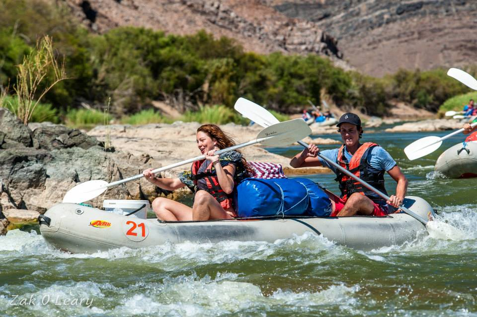
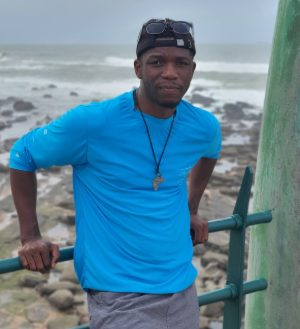
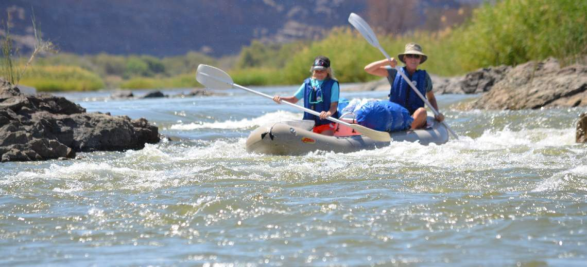
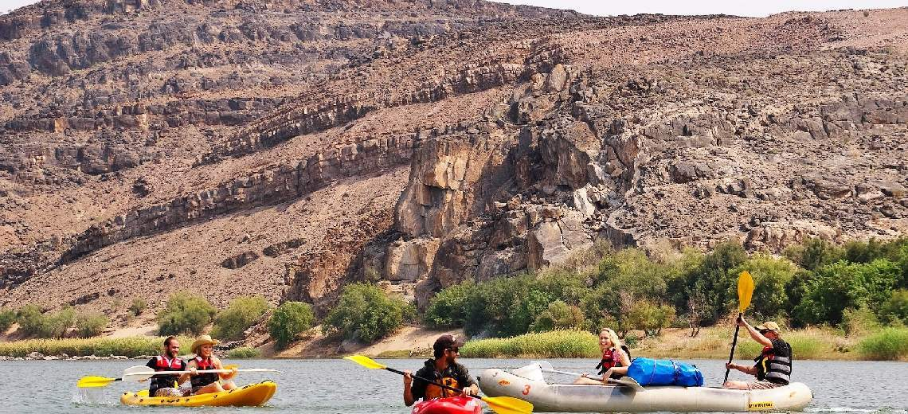

Rafting Site
Orange River Rafting for Students – 3 Days
The 3-Day Orange River Rafting for Students is an adventure suitable those with a need for adrenaline and those who crave to escape the city – on a student budget of course!Join us and experience the Richtersveld on an inflatable raft and use the Orange River as a mode of transport. Bring along any inflatable devices you have and let's make our adventure a fun and colorful one!Explore the only mountain desert in South Africa and let our experienced guides lead you through one of the most striking landscapes South Africa has to offer. The perfect outdoor getaway with fun-filled rapids, hiking, star gazing and discovering the stark beauty of the Richtersveld desert. Sleep under the star-studded skies of the Richtersveld and enjoy fire-cooked meals made by your guide.he Orange River Rafting for students tour is the perfect adventure for those who enjoy a bit of rugged bush living!
Orange River Rafting for Students Route Plan
Over the next three days, you can expect to have spectacular mountain views, fast-flowing channels and excellent bird life. The River has a grade at level 1 – 3 in difficulty and is suitable for beginners. The Orange River is a pool drop river, ‘which means after every rapid, there is always a pool’. The Richtersveld is home to goat herders trekking through the endless desert mountains. We don’t have designated campsites and camp for the day depends on the progress made that day, where we will choose our overnight spot on the banks of the river. This is a great combination of rafting, relaxing, hiking and exploring. It is not a race, but rather an outdoor expedition suitable for all with no experience.
  How to find us
Our base camp, The Growcery, is 22km from the border post inside South Africa. Our Adventure will start in South Africa and end in Namibia. We will then be transported back through Namibia and over the Border back to the Growcery Camp.
NEED HELP?
CALL US +27 84 604 2756
ASK US A QUESTION
OUR TERMS & CONDITIONS